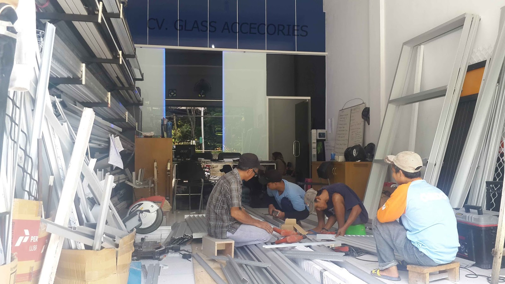

Kaca merupakan salah satu unsur yang cukup penting pada sebuah bangunan baik untuk rumah tinggal, pertokoan, gedung bertingkat maupun multi use building. Kaca semakin melengkapi bangunan agar terlihat lebih cantik dan memiliki poin keindahan sekiranya di pandang orang. Kaca juga lazim dipakai sebagai material untuk pintu, furnitur, railing tangga, shower box, kanopi, table top, dan malahan panel dinding.
Jenis-jenis kaca diantara lain kaca tempered, kaca shower, railing kaca, kanopi kaca dan masih banyak lagi. Tiap kaca memiliki fungsi masing-masing yang membikin banyak orang kian mebutuhkannya dari hari ke hari. Berikut ini sedikit ulasan mengenai kaca bagi sebuah banguanan, fungsi utama dan bagaiman memilih kaca yang sesuai untuk sebuah hunian baik rumah, kantor ataupun gedung. Akan di jelaskan juga mengenai lantai kayu jati terbaik yang dapat anda beli.
Jasa Pemasangan Railing Kaca
railing kaca Serang yakni pilihan yang pas saat Anda menghendakin desain interior rumah yang minimalis. Tak rumah Anda telah dibangun dengan desain minimalis, karenanya tidak salah dikala railing, entah itu railing tangga dan balkon terbuat dari kaca. Anda dapat memilih desain sesuka hati Anda. Ada banyak opsi desain railing kaca Serang yang bisa Anda pilih, dengan ukuran serta bahan yang berbeda. Mereka tak lagi membuat pagar tangga atau balkon dari kayu. Tapi, bukan cuma teladan yang sebaiknya Anda jadikan pertimbangan saat mau memesan railing kaca Serang ini. Bahkan juga bahan yang dipakai.
Anda bisa memilih kaca dengan kualitas terbaik. Anda dapat pertimbangkan untuk menerapkan kaca tempered. Ini tipe kaca yang sungguh-sungguh kuat. Apabila itu, kaca ini dapat pecah tetapi tidak memunculkan pecahan yang runcing tetapi pecahan kecil-kecil dan lembut. Dikatakan sungguh-sungguh aman lantaran kaca tempered tak menimbulkan pecahan yang runcing saat tiba-tiba kaca pecah entah itu dampak kecelakaan atau petaka seperti gempa. Tidak anda dikala ini sedang memerlukan railing kaca Serang untuk kantor, rumah dan daerah-daerah lainnya, anda dapat mengunjungi dis.or.id. Sekarang pasti, dengan railing ini, Anda tak cuma membuat tangga dan balkon lebih aman, tetapi juga untuk memperindah tampilan interior rumah Anda.
Harga yang sungguh-sungguh ekonomis serta kualitas terbaik yang sudah terjamin membuat anda tak akan menyesal membeli railing kaca Serang di dis.or.id. Tentu dengan harga yang murah tapi tetap berkelas.
Info Pemesanan Selengkapnya
Google Maps: https://www.google.com/maps/d/viewer?mid=1W14inZYnfBEjAU3RL6mMdLOdyHyt3uKR&ll=-7.27380280025364%2C112.65243155000007&z=18
Note: https://www.facebook.com/notes/distributor-of-industrial-supply/kontraktor-jasa-pemasangan-railing-tangga-kaca/1785722898394256/
Event: https://www.facebook.com/events/1865522363760219/
Distributor, Supplier & Jasa Pasang Kanopi Kaca

Banyak variasi kaca kanopi yang dipakai sebagai atap, tidak cuma satu jenis saja. Sifat utama material bahan atap akrilik juga bisa disebut atap acrylic, ini ialah warnanya yang bening tembus pandang. Jikalau tembus pandang, kaca meresap cahaya yang masuk sehingga kian tebal kaca karenanya semakin sedikit sinar yang dapat melewatinya, karenanya sifat transparannya makin berkurang.|Di samping pintu kaca shower akan membikin kamar mandi kecil terlihat lebih besar. Pada atap akrilik, absorpsi sinar yang terjadi demikian kecil sehingga walaupun ketebalannya bertambah, sifat transparannya tidak banyak berubah.
Harga untuk tiap-tiap pemasangan bahkan bermacam-macam pantas dengan kebutuhan anda. Anda juga dapat memenfaatkan jasa pemasangan atap kanopi kaca dengan segala variasi kaca yang anda butuhkan yang cocok dengan kriteria atap kanopi.
Distributor & Supplier Kaca Shower

Salah satu metode yang dapat diterapkan untuk menghasilkan kamar mandi yang selalu bersih yakni mengaplikasikan shower karena sistem pembersihannya memang jauh lebih praktis dibanding dengan yang mengaplikasikan konsep bak mandi. Dan sensasi mandi menjadi lebih asik untuk dirasakan. Shower screen yakni kotak atau alat yang berfungsi sebagai penyekat ruang khusus untuk kamar mandi. Bila pemasangannya juga betul-betul gampang dikerjakan dan tak memerlukan waktu yang lama.
Disana anda bisa mendapatkan kaca shower yang pastinya pantas untuk kamar mandi anda. Harga yang ditawarkan pun tergolong sungguh-sungguh murah.
Distributor, Supplier & Jasa Pasang Kanopi Kaca

Atap kaca skylight banyak dipakai pada rumah, gedung, kantor, café yang mengusung gaya modern untuk membuat efek cahaya yang dramatis pada ruangan bagian bawahnya serta memberi kesan modern pada bangunan. Dan sensasi mandi menjadi lebih asik untuk dinikmati. Ada sebagian alasan kenapa Pintu Kaca Shower banyak diterapkan salah satunya merupakan kaca lebih kelihatan bersih dan rapi dan juga lebih gampang dalam perawatannya. Bila tembus pandang, kaca mengabsorpsi sinar yang masuk sehingga semakin tebal kaca maka semakin sedikit cahaya yang dapat melaluinya, maka sifat transparannya makin berkurang.|Di samping pintu kaca shower akan membuat kamar mandi kecil terlihat lebih besar. Pada atap akrilik, absorpsi cahaya yang terjadi demikian kecil sehingga meskipun ketebalannya bertambah, sifat transparannya tidak banyak berubah. Atap akrilik atau dapat juga disebut atap kaca acrylic ini banyak ditemukan di sebuah bangunan rumah, seperti ruko, apartemen, cafe, mall, hingga bangunan gedung.
Dis.or.id dapat membantu anda yang mau memasang atap kaca skylight pada gedung, dengan bermacam kelebihan yang bisa anda dapatkan dengan memanfaatkan jasa yang di tawarkan dis.or.id. Kecuali disana anda bisa menerima penawaran mengenai jasa pemasanga kanopi kaca. Anda juga bisa memenfaatkan jasa pemasangan atap kanopi kaca dengan semua macam kaca yang anda butuhkan yang cocok dengan kriteria atap kanopi. Banyak bangunan seperti gedung perkantoran, perumahan, ruko dan apartement yang menggunakan kanopi kaca tempered. Jika fungsi utama kanopi sebagai pelindung untuk bangunan hal yang demikian, pemasangan kanopi kaca juga dapat membikin bangunan menjadi terlihat lebih cantik dan menarik, apalagi mengaplikasikan konsep yang sama dengan konsep rumah minimalis. Disana anda akan memperoleh kanopi kaca yang sesuai dengan bermacam-macam ketebalan dan harga yang cukup terjangkau.
Jasa Maintenance Kaca
Jasa maintenance kaca menjadi solusi bagi Anda yang memiliki gedung yang terbuat dari kaca. Kaca amat membutuhkan perawatan sebab tiap hari terkena cahaya matahari atau juga hujan. Bermacam, kaca akan nampak kusam sebab sudah lama tidak dibersihkan. Kecuali cuma membersihkan kaca, jasa maintenance kaca juga bisa mengerjakan pembetulan.
Apabila juga dengan warna dan wujud kaca.
Dis.or.id memahami semakin banyak gedung pencakar langit dengan betuk yang berbeda-beda. Disana anda dapat memanfaatkan jasa maintenance kaca dengan energi ahli yang sanggup membersihkan gedung kaca dengan produk pembersih kaca apa yang terbaik untuk menghilangkan kotoran dan kusam. Dis.or.id juga sudah mempersiapkan dengan berbagai alat yang dapat diterapkan untuk menjangkau seluruh sudut gedung, sekalipun gedung Anda amat tinggi. Kecuali cuma dalam hal membersihkan kaca, mereka juga sanggup mengerjakan perbaikan serta penggantian kaca yang mengalami kerusakan.
Jasa Pemasangan Kaca Tempered

Tak yang sudah di kenal bahwa jasa pemasangan kaca tempered cuma dijalankan oleh orang yang profesional. Selain ini disebabkan bahan ini bukan ragam kaca biasa. Dengan pengerjaan pendinginan yang kencang membuat kaca memiliki kelenturan dan kekuatan yang bagus kepada tekanan di kedua sisi permukaan kaca. Selain sembarang tukang juga dapat menjalankan proses pemotongan ini. Melainkan dulu hanya gedung perkantoran atau pusat perbelanjaan modern saja yang mengaplikasikan variasi kaca ini, sekarang rumah hunian juga telah dibangun dengan kaca tempered.
Kalau itu, berbagai bagian properti akan semakin menarik apabila dibuat dari kaca tempered seperti kanopi, pintu, kamar mandi, dan balkon.
Salah satu ragam kaca yang layak untuk digunakan pada seluruh variasi bangunan maupun perindustrian merupakan kaca tempered, ialah yang paling aman sebab mempunyai elastisitas lebih bagus dibandingkan dengan kaca biasanya. Namun, pemasangan kaca tempered ini seharusnya ekstra hati-hati. Bukan sembarang alat yang diterapkan untuk memotong kaca tempered pantas dengan kebutuhan. Tak dikala ini anda sedang mau membangun suatu bangunan atau gedung, anda bisa memanfaatkan kaca tempered untuk digunakan lantas ke semua variasi bidang. Dis.or.id menawarkan jasa pemasangan kaca tempered sebab kami memiliki alat yang komplit. Harga yang ditawarkan untuk pemasangan kaca tempered betul-betul murah.
Distributor & Supplier Pintu Kaca

Pintu kaca ialah hal yang cukup penting dimiliki oleh sebuah bangunan. Semakin banyak teladan pintu kaca saat ini seperti kaca tanpa bingkai atau frameless yang banyak diterapkan untuk pintu perkantoran dan sentra perbelanjaan. Perlengkapan teladan pintu kaca bisa anda dapatkan, tak hanya model pintu kaca konvensional, yakni pintu kaca lipat, melainkan juga pintu kaca geser. Desain hal yang demikian bisa disesuaikan dengan konsep properti Anda. sebagian jenis kaca yang paling kerap kali diterapkan untuk membikin pintu kaca, mulai dari macam kaca tempered sampai kaca non-tempered. Kini paling banyak diminati ketika ini ialah kaca tempered sebab jauh lebih kuat dan bendung lama.
Dis.or id siap menolong anda untuk membuatkan pintu kaca idaman anda. Dengan tenaga ahli yang sudah sangat handal dalam membuat bermacam teladan pintu kaca.
Kaca yang di pakai yaitu kaca dengan mutu terbaik. Anda bisa memilih kaca tempered yang sekarang ini sedang naik daun. Untuk budget yang lebih sedikit, Anda dapat memilih ragam kaca non-tempered.
Jual Kaca Cermin

Lihat saja banyak produk cermin yang dihasilkan dengan desain unik dan menarik. Kini, cermin tidak hanya berbentuk persegi atau persegi panjang saja. Jadi, hanya tampak transparan dari satu sisi saja. Untuk membuat ruangan private, maka kaca ini transparan sekiranya dipandang dari dalam. Sementara itu, saat diperhatikan dari luar, kaca ini reflektif. Cermin minimalis mempunyai siku. Jikalau itu, kadang-kadang cerminnya tidak ada bingkainya atau yang tak jarang disebut dengan kaca cermin frameless.
Tak saja, desainnya saja yang dirubah. Banyak orang yang lebih suka dengan desain kaca cermin minimalis. Karenanya cuma persegi atau persegi panjang. Anda dapat menambahkan pigura atau tanpa frame cocok dengan kesukaan Anda. Harga yang relatif murah dan mutu terbaik adalah ciri khas dari dis.or.id. Melainkan kunjungi dan dapatkan isu menarik mengenai kaca cermin asa anda. Tetapi kunjungi dis.or.id untuk menerima penawaran menarik.
Distributor & Supplier Pintu Lipat Kaca
Secara umum, kaca dibagi menjadi 6 variasi, ialah kaca bening, kacang berwarna atau tinted glass, kaca es, kaca cermin atau one way glass, kaca laminasi, dan yang terakhir kaca tempered. Variasi kaca nomor 6 ini amat dianjurkan untuk diwujudkan sebagai bahan membikin pintu lipat kaca.
Banyak hal yang telah Anda ketahui tentang pintu kaca lipat tempered. Pastikan Anda memilih kaca tempered mutu terbaik agar pintu lipat yang Anda pesan dapat diterapkan dalam kurun waktu yang betul-betul lama. Dan yang pasti, ruangan menjadi lebih modern, minimalis, dan nyaman untuk ditempati. Hinges yakni aksesoris yang penting sebab hinges inilah yang menyangga berat pintu kaca Anda.
Jasa Pemasangan Kubikel Toilet
Kubikel kamar mandi mempunyai desain yang mewah dan elegan sehingga siapa saja yang memandangnya pasti akan beratensi, tak hanya itu kubikel kaca memberikan kesan bersih, rapid an tersusun. Kubikel toilet bisa di gunakan di kamar kecil mall.
Bila anda berminta untuk membeli kubikel kaca, anda dapat mengunjungi dis.or.id. Kubikel WC atau kubikel kamar mandi ini lebih murah di banding dengan pembuatan kamar mandi atau kamar kecil konvensional. Kaca sebagai penyekat dalam kamar mandi lazim disebut kaca shower. Kaca shower banyak digunakna sebab memberikan kesan mewah.
Tersedia bermacam ukuran serta ketebalan dari kubikel yang dapat anda pilih layak dengan yang anda inginkan.
Sebab disana terdapat bermacam-macam ukuran kubikel toilet yang dapat anda jadikan opsi untuk hunian atau temap usaha anda. Kaca shower yang di jual di jamin kaca shower yang mempunyai kwalits terbaik dan bermutu tinggi.
Distributor & Supplier Partisi Kaca

Partisi kaca kini tidak cuma ditemui di perkantoran modern atau pusat perbelanjaan. Sudah banyak properti yang mengaplikasikan bahan berupa kaca sebagai partisi. Anda dapat lihat di sentra perbelanjaan modern, hotel, dan juga perkantoran. Banyak ruangan yang disekat dengan mengaplikasikan partisi kaca. Anda bisa menghitung sendiri berapa uang yang wajib Anda siapkan untuk membeli bahan untuk partisi tembok. Malahan ruangan disekat dengan partisi ini seperti kamar mandi dalam dan taman dalam ruangan. Akan namun, Anda mesti selektif dalam hal memilih kaca untuk partisi. , Anda observasi kualitas kaca yang diaplikasikan. juga dengan variasi kaca. macam kaca ini menetapkan privacy ruangan yang disekat. Ada kaca transparan, semi transparan, dan juga kaca cemin yang ruangan betul-betul privat. Partisi kaca dengan mutu terbaik dan bisa anda di dis.or.id. Disana anda menerima partisi kaca dengan harga yang betul-betul . Disana anda akan menerima partisi kaca yang dengan kemauan anda.